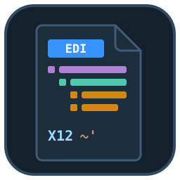
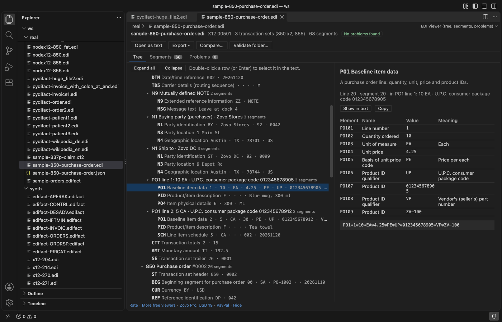
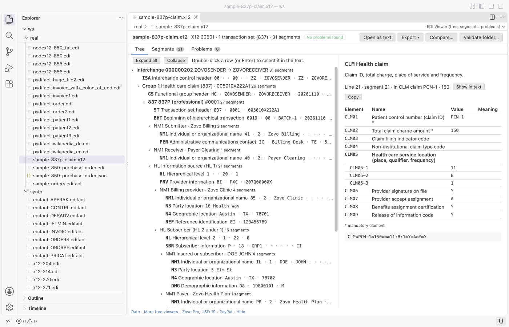
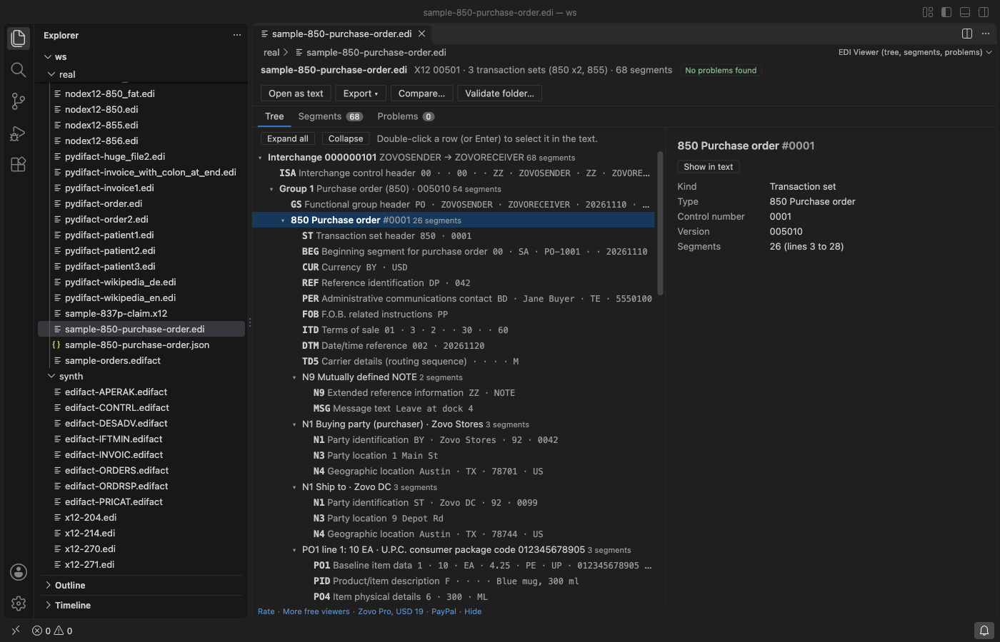

EDI Viewer & X12 Viewer, EDIFACT Viewer (EDI Parser)
EDI Viewer & X12 Viewer, EDIFACT Viewer (EDI Parser), a VS Code extension by Zovo
Zovo Pro: USD 19 once, every Zovo tool
Free, MIT license. Needs VS Code 1.90.0 or newer. Extension ID zovo.zovo-edi-viewer, version 0.1.1.
Open an X12 or EDIFACT file in VS Code and read it as a tree: interchanges, functional groups, transaction sets or messages, loops and segments, with the name of every element and the meaning of its codes. The viewer also checks control numbers, counts and mandatory elements. In the text editor you get colours, names on hover, problems in the Problems panel, and Format and Minify commands. No network, read-only.

Questions people ask
Is EDI Viewer & X12 Viewer, EDIFACT Viewer (EDI Parser) free?
Yes. EDI Viewer & X12 Viewer, EDIFACT Viewer (EDI Parser) is free and MIT licensed.
How do I install EDI Viewer & X12 Viewer, EDIFACT Viewer (EDI Parser)?
Click "Install in VS Code" above, or search for zovo.zovo-edi-viewer in the Extensions view.
What you see
| X12 | EDIFACT | |
|---|---|---|
| Separators | read from the ISA header (element, repetition ISA11, component ISA16, segment terminator), with or without line breaks | read from UNA, or the defaults :+.? '; the release character ? is honoured |
| Envelopes | ISA/IEA, GS/GE, ST/SE | UNB/UNZ, UNG/UNE, UNH/UNT |
| Loops | HL hierarchy (856, 837, 270, 271, 276, 277), NM1, N1, PO1, IT1, LIN, CLM, CLP, SVC, LX, S5 and more | segment groups: NAD, LIN, CPS, PAC, RFF, TDT, GID and more |
| Names | segments, elements and common code lists for 850, 855, 810, 856, 997, 999, 820, 837P, 837I, 835, 270, 271, 276, 277, 204, 214, 940, 945 | segments, composites, components and code lists for ORDERS, ORDRSP, DESADV, INVOIC, IFTMIN, PRICAT, APERAK, CONTRL |
- Tree tab: click a segment to see each element with its ID (for example
BEG03orNAD 02-1), name, value and code meaning. Double-click (or Enter) selects the segment in the text editor next to the viewer; a click on an element row selects just that element. - Segments tab: every segment with its line number and data, with a filter by segment ID or text.
- Problems tab: every problem with its line; a click shows the segment.
- Names are short descriptions written for this extension. EDIFACT names follow the public UN/CEFACT directories.

What is checked
- X12: the width of each ISA field, ISA13 against IEA02, GS06 against GE02, ST02 against SE02, the number of functional groups (IEA01), transaction sets (GE01) and segments (SE01).
- EDIFACT: UNB05 against UNZ02, UNG05 against UNE02, UNH01 against UNT02, and the counts in UNZ01, UNE01 and UNT01.
- Segments that are not part of the transaction set or message type, segments outside an envelope, missing trailers, a duplicate control number in one group.
- Empty mandatory elements in the segments the dictionary knows.
Text editor
- Files ending in
.edi,.x12,.edifact,.edf,.850,.810,.856,.837,.835and other transaction numbers open as EDI text; files that start withISA,UNAorUNBare found by their first line too. - Hover: rest the mouse on a value to see its element ID, name and code meaning.
- Problems: the same checks as the viewer, shown in VS Code's Problems panel while you type.
- Format EDI (one segment per line) and Minify EDI (one line). Only the white space between segments changes; the segments stay byte for byte the same.
Free and Pro
Everything above is free, with no limit and no sign-in. Three Zovo Pro tools save time on bigger jobs. Each has 3 free tries on your computer, and a try counts only when the tool gives you a result.
| Tool | Free | Zovo Pro |
|---|---|---|
| Tree, segments, problems, names, hover, format, minify | yes | yes |
| Export to JSON (a tree per transaction with element names) or CSV (line items of 850, 810, 856, ORDERS, INVOIC, DESADV; one row per segment for other types) | 3 tries | yes |
| Compare two EDI files segment by segment: added, removed and changed segments with the elements that differ; can ignore control numbers, dates and times; Markdown report | 3 tries | yes |
| Validate a folder: every X12 and EDIFACT file checked, one report with errors, warnings, counts and trading partners (ISA06/ISA08, UNB sender and recipient), as Markdown and CSV | 3 tries | yes |
Zovo Pro is USD 19 once and turns on the Pro tools in every Zovo extension. Nothing about Pro shows when you open a file; it only comes up when you click one of the three tools. To hide the buttons, set ediViewer.showProTools to false.

Safe with any file
- The file is read in a separate worker thread with a time and memory limit. A broken or hostile file gives a message; it cannot freeze VS Code.
- Files up to 64 MB open in the viewer; up to 500,000 segments are shown. Every value is shown as text, never as HTML.
- Read-only: the viewer never writes to the file.
- No network and no telemetry.
Commands
| Command | What it does |
|---|---|
| EDI Viewer: Open in EDI Viewer | Open any file in the viewer (also in the Explorer right-click menu and the editor title bar) |
| EDI Viewer: Format EDI (one segment per line) | One segment on each line |
| EDI Viewer: Minify EDI (one line) | All segments on one line |
| EDI Viewer: Open a sample X12 purchase order | A small sample to try the viewer |
| EDI Viewer: Export EDI to JSON (Pro) | Save the parsed file as JSON |
| EDI Viewer: Export EDI to CSV (Pro) | Save line items or segments as CSV |
| EDI Viewer: Compare two EDI files (Pro) | What changed between two files |
| EDI Viewer: Validate a folder of EDI files (Pro) | Check every EDI file of a folder |
Settings
| Setting | Default | |
|---|---|---|
ediViewer.validate | true | Problems in the text editor |
ediViewer.hover | true | Names on hover |
ediViewer.showProTools | true | Show the three Pro buttons |
ediViewer.showSupportLinks | true | Small links at the bottom of the viewer |
ediViewer.askForRating | true | Ask once, after a few days of use, for a rating |
Guides
- Validate a folder of X12 or EDIFACT files in VS Code
- Read an X12 or EDIFACT file in VS Code
- Convert an EDI file to JSON or CSV
- EDI Viewer Online, free in your browser with no upload
- Format XML in VS Code and run XPath on it
Install EDI Viewer & X12 Viewer, EDIFACT Viewer (EDI Parser)
Click the button to open VS Code and install it, or press Ctrl+P (Cmd+P on macOS) in VS Code and run ext install zovo.zovo-edi-viewer.
Free, MIT license. Needs VS Code 1.90.0 or newer. Extension ID zovo.zovo-edi-viewer, version 0.1.1.
Source code and issues are on GitHub.
Zovo Pro and support
Zovo Pro: USD 19 once, every Zovo viewer. It turns on the Pro tools in this extension and in the other Zovo extensions you use. The free features stay free.
After a card payment your license key shows on the next page. Paste it with the command "Zovo Pro: Enter a key".
You can also support the work with no Pro:
Need your format supported?
Open a format request with a sample file, and I reply there whether it can be done. For USD 299 once, through this GitHub Sponsors tier, I add your file format or a missing feature to this extension, with tests, within 7 days.